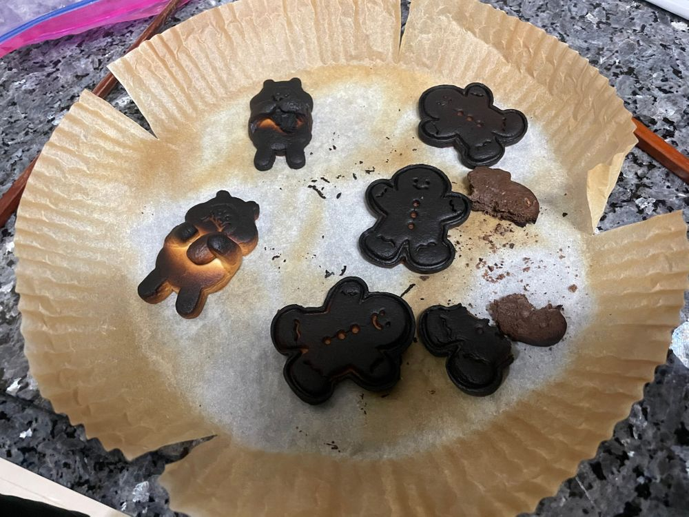

드디어 브랜드 론칭.
디자인 인생 21년, 어릴 때부터 보던 비슷한 것들이 아닌
어디에서도 볼 수 없던, 오직 나만이 낼 수 있는 느낌을 세상에 던지고 싶었다.
솔직히 자신 있다. 결국엔 모두가 나를 인정할 수밖에 없을 것이다
기다리고 기다리던 순간
이목이 집중되고 숱한 질문들이 쏟아진다.
그 수많은 질문 중 내게 꽂힌 질문
“세상의 이치에 따라가지 않겠다는 의미가 담긴걸까요”
.
.
.
사실 좀 놀랐다.
이토록 내 작품을 정확히 바라보는 저 사람은 누구인가
지금껏 그려왔던 꿈들이 실현되고 있음이 이제야 실감이 나는 것 같다
.
.
.
시작이 좋다.